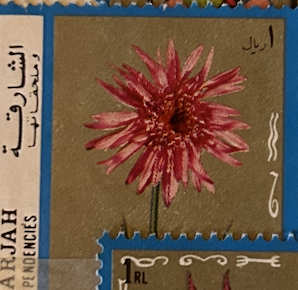
| SOURCE | TITLE| IMAGE MATCH | click to source page |
| eBay | Vietnam Artist Presentation Submitted for 1977 Stamp | eBay | 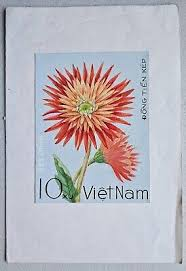 |
| All Numis | Stamps Catalog - List of stamps for 1977, Vietnam | 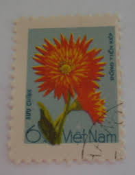 |
| Postage Stamp Vietnam, 1977. Orange Cactus Dahlias Editorial Photo - Image of mail, cactus: 232817256 | 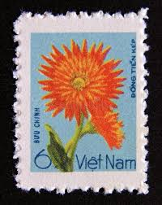 | |
| Dreamstime.com | 2,319 Vietnam Letter Stock Photos - Free & Royalty-Free Stock Photos from Dreamstime - Page 7 | 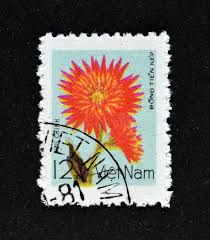 |
| Alamy | AUSTRALIA - CIRCA 2005: A used postage stamp from Australia, symbolizing the History of Australian Open 1905 - 2005, circa 2005 Stock Photo - Alamy | 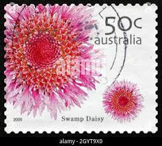 |
| Shutterstock | Vietnam Print: Over 10,200 Royalty-Free Licensable Stock Photos | Shutterstock | 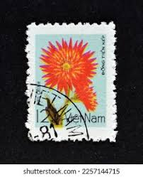 |
| The last bouquet before the frost. Hoffman estate Illinois | 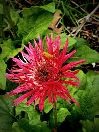 | |
| Shutterstock | Lettering Vietnam: Over 7,319 Royalty-Free Licensable Stock Photos | Shutterstock | 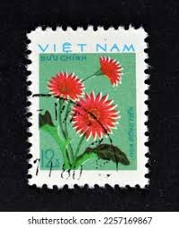 |
| Shutterstock | Australia Circa 2005 Used Postage Stamp Stok Fotoğrafı 562601689 | Shutterstock | 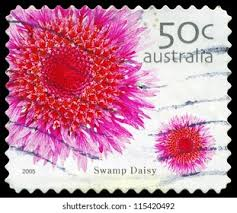 |
| Alamy | Rose postage stamp vietnam hi-res stock photography and images - Alamy | 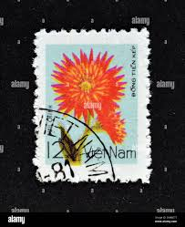 |
| Dreamstime.com | An Orange 1977 Urba Car at Lane Motor Museum with the Largest Collection of Vintage European Cars, Motorcycles and Bicycles Editorial Stock Image - Image of nashville, vehicle: 267248624 | 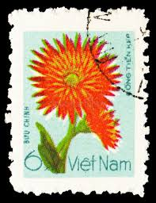 |
| Silk Plants Direct | Brown Burgundy Fake Flowers | Wine Silk Flowers | Silk Plants Direct – Tagged "potted" | 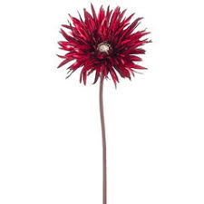 |
| global.flowers | Gerbera large flowered spider shaped | Global Flowers Club | 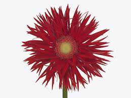 |
| Details from “Flower”, Mughal, early 17th century. The British Museum. I think this could be a form of knapweed but then again imaginary flowers were also created by artists so can't be | 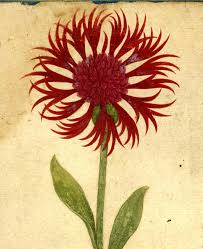 | |
| eBay | GB 1963 Nature 3d on maxi card - 1950s postcard - not FDC..................57311 | eBay | 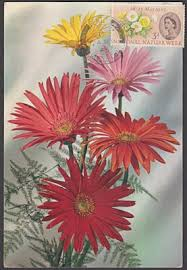 |
| The Gerbera - 'Flamingo' with a bit of funky flare today | Facebook | 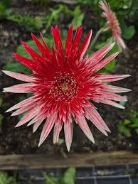 | |
| Alamy | Rose garden postcard vintage hi-res stock photography and images - Alamy | 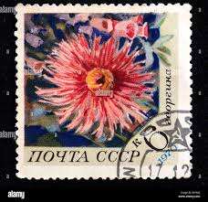 |
| PICRYL | The Soviet Union 1970 CPA 3944 stamp (Dahlia), Soviet Union - PICRYL - Public Domain Media Search Engine Public Domain Search | 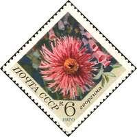 |
| Artvee | Colchicum flore multiplici; colchicum montanum ; colchi. bysantinum ; colchicum panonicum variegatum - Artvee | 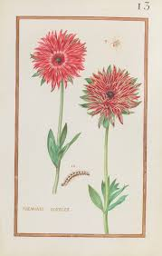 |
| Alamy | Cancelled postage stamp printed by Vietnam, that shows Fokker Dr-1 triplane, “EXPO'86” World fair Vancouver (Historic Aircraft), circa 1986 Stock Photo - Alamy | 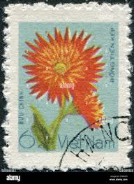 |
| global.flowers | Gerbera large flowered curl-shaped 'Pasta Piccata' | 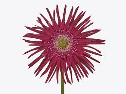 |
| Life is difficult but I get in good mood by looking at the flowers. . . . . . . #mobilephotography #mobigraphers_ #shotoniphone #yourshotphotographer #photography #photographers_of_india #reels #reelsinstagram #reelsvideo #timelapse #mobilephotography ... | 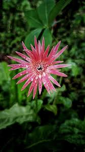 | |
| Freepik | A single pink gerbera daisy with a green stem and leaves in the background | Premium Photo | 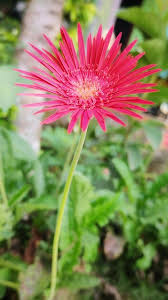 |
| global.flowers | Photo of a red Gerbera | Global Flowers Club | 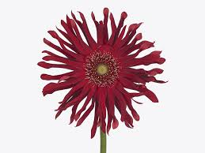 |
| Pink flower stock image. Image of scent, florists, silk - 233395 | 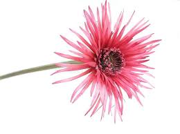 | |
| DepositPhotos | Coreopsis Often Called Calliopsis Tickseed Bright Orange Flowers Isolated Black — Stock Photo © shamils #649320082 | 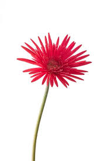 |
| FramedArt.com | Gerbera Daisies Artwork by Beth Balogh at FramedArt.com | 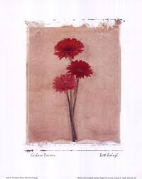 |
| global.flowers | Gerbera large flowered curl-shaped Gerpasta Stereo | 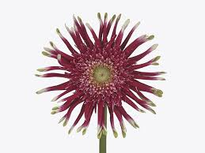 |
| First Saturday Arts Market | Betsy Barry – First Saturday Arts Market | 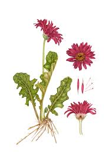 |
| Shutterstock | Detail Pink Cactus Dahlia Flower Garden Stock Photo 2582339975 | Shutterstock | 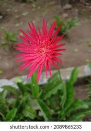 |
| WordPress.com | May | 2012 | photoplusbyritasim | Page 9 | 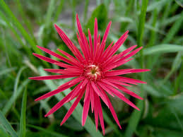 |
| FUN FACT: AFRICAN DAISY 🌸 Osteospermum, commonly known as African Daisy, is a blossoming perennial that boasts a wide range of bright colors with striking dark centers. African Daisies are generally low-maintenance | 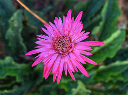 | |
| Along the shore Nikon D 90 Dalian China | 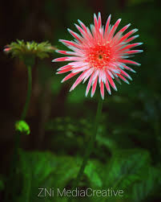 | |
| The Light and Shadow Maestro 🇮🇳 (@_street_snapper_) • Instagram photos and videos | 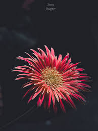 | |
| eBay | Flowers Used Australian Stamp Individuals for sale | eBay | 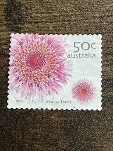 |
| Heritage Post House | Red Dahlia Stamps (Beautiful Blooms Series, Flowers, Bridal, Red) Vint – Heritage Post House | 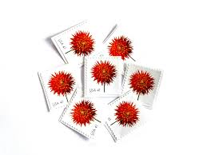 |
| The Cape Gallery | Artist ETHEL MAY DIXIE, The Cape Gallery | 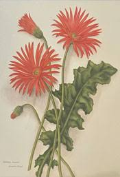 |
| Vecteezy | vibrant floral elegance in nature dahlia gerbera chrysant 36230625 Stock Photo at Vecteezy | 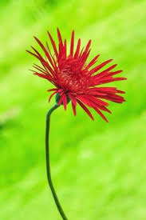 |
| Artsy Shark | Featured Artist Russell Brown | Artsy Shark | Inspiring Artists to Build Better Businesses | 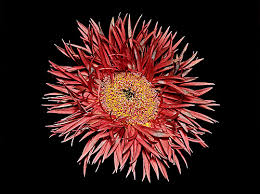 |
| Vishnuprasad (@iam___vp) • Instagram photos and videos | 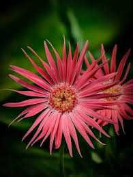 | |
| highlightseveryonefollowers #followersreelsfypシ゚viralシfypシ゚viralシalシ Suman. | Ramil Quartero | Facebook | 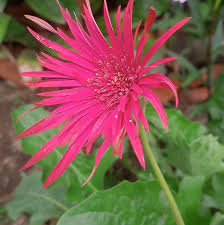 | |
| HipStamp | Australia 2005 Sc#2004 50c Swamp Daisy, Flowers, Flora USED. | Australia & Oceania - Australia, General Issue Stamp / HipStamp | 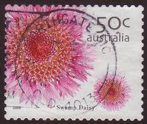 |
| Exploring photography with phone cameras | 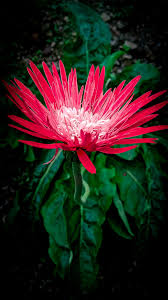 | |
| Thursd | Gerbera Pasta Piccata® | 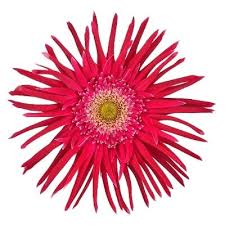 |
| PHONEKY | Golden Blooms: ดอกทานตะวันที่ร่าเริง 🌻✨วอลล์เปเปอร์ - ดาวน์โหลดลงในมือถือของคุณจาก PHONEKY | 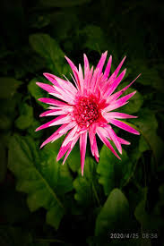 |
| eBay | USSR postage stamp 1978 Dahlia "Red Star" RARE VINTAGE | eBay | 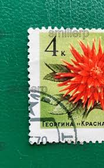 |
| Dreamstime.com | Dresden, Saxony, Germany - 01.04.2020: a Stamp Printed in GDR East Germany on the Occasion of the 10th Party Congress of the Editorial Stock Photo - Image of mail, delivery: 168443343 | 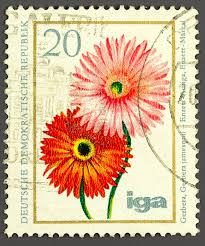 |
| Gerbera Dhaka, Bangladesh Samsung galaxy A54 | 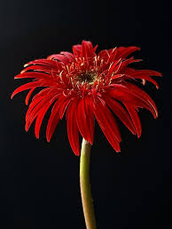 | |
| Fairfield City Garden Club | Norfolk Island | 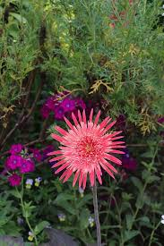 |
| Sheree Shenna Dimiao (sdimiao) - Profile | Pinterest | ||
| Flickr | Tamron 17-70mm f/2.8 Di III-A VC RXD | Flickr | |
| global.flowers | Gerbera large flowered curl-shaped Pastini Puglia | |
| Redmi note 14 gcam photos | ||
| Pexels | Red Flower With Green Stem in Close-up Photography · Free Stock Photo | |
| DPReview | Canon EF 100mm f/2.8 macro with adapter... | DPReview Forums | |
| Red beauty💃 Babandesiya/Transvaal Daisy Price=350/- Wattegama ,Kandy.. | ||
| Saatchi Art | Gergeba 02 Photography by Thai Dong | Saatchi Art | |
| Alamy | Cancelled postage stamp printed by Vietnam, that shows portrait of Ho-Chi-Minh (1890-1969), 80th Birth anniversary of President Ho Chi Minh, circa 197 Stock Photo - Alamy | |
| Siti Rohmah (sitikk_key) - Profile | Pinterest |